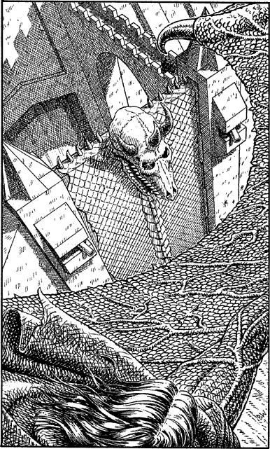

350
Below you is the South Gate of Kaag. Its surface is covered by the hide of Nyxator, preserved by the Darklords as a trophy of Naar’s evil power. Nyxator was the first servant of the God Kai to appear on Magnamund and the form he chose to adopt was that of a great dragon. He was the first recipient of Kai’s wisdom, a wisdom he encapsulated in the Lorestones for the future good of all who follow the way of Kai.

You stare down at the face of your ancient ancestor and, for a fleeting moment, you detect the trace of a smile upon its fossilized lips. Then, in the next instant, you plunge into a bank of stormy grey cloud and the dread city of Kaag is lost to view.
By the time you find your way back to the Skyrider, the storm has blown itself out. Your return is met with cheers and joyous celebration for your quest has been a great success. Lord Rimoah is especially pleased and he praises you warmly:
‘Against all odds,’ he says, his voice filled with pride, ‘you have rescued our friend from the nightmare fortress of Kaag and delivered him safely into the arms of his loyal crew.’
Congratulations, Grand Master Lone Wolf. You have triumphed once again, proving beyond doubt that you embody the ideals of the Kai. You have saved your closest friend from the clutches of the evil druid Cadak and confounded his plans.
Yet the fight against Evil goes ever on. Soon your courage and skills will be put to the test again, this time in a far distant realm of Magnamund. The nature of the quest and the perils that await you can be found in the next Grand Master adventure entitled: